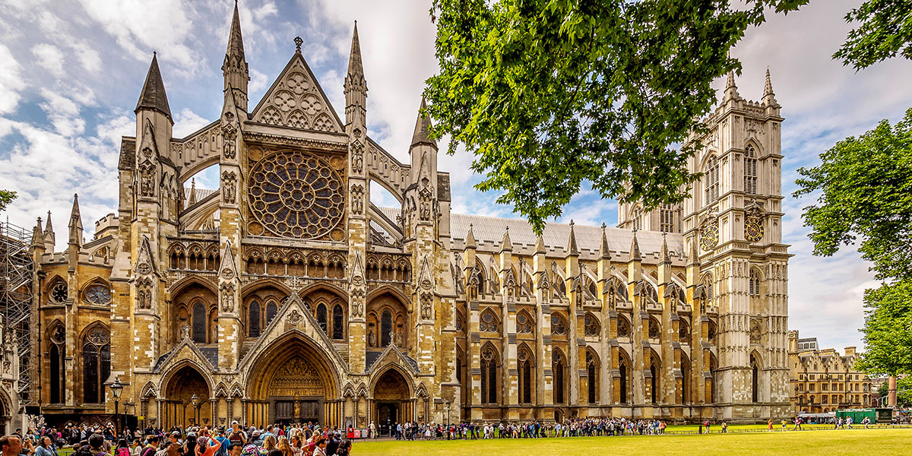
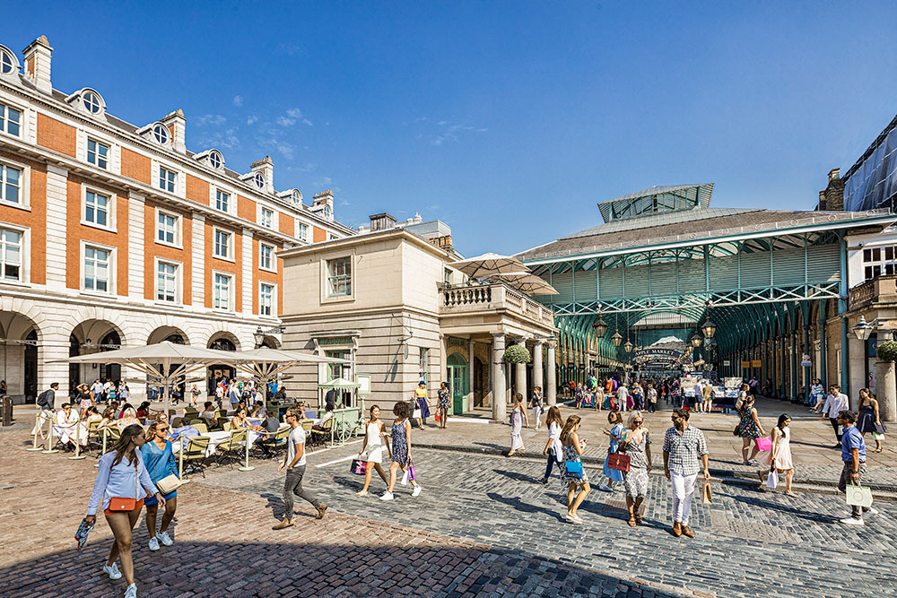

Que hacer en Londres?
by author
Hace 8 minutos Nuevo!Introducción
Esta lista de los mejores lugares que visitar en Londres te ayudará a preparar un viaje a una de las ciudades más imprescindibles para cualquier viajero. Con una oferta cultural y de ocio interminable, museos con incalculables colecciones, mercados callejeros para perderse, espacios verdes impecables y barrios llenos de encanto, esta ciudad es perfecta para hacer una escapada de fin de semana o más días, sin posibilidad de aburrirte en ningún momento.
1. Camden Town
Pasar una mañana en el sorprendente y entretenido barrio de Camden es una de las mejores cosas que hacer en Londres. Este barrio, famoso por tener el mercado más grande de la ciudad con más 1000 puestos y tiendas alternativas, es perfecto para encontrar un regalo único, comer en alguno de sus puestos callejeros o simplemente, escuchar música en directo. Aunque está abierto todos los días y mucha gente recomienda ir en domingo, nosotros aconsejamos visitar Camden Town entre semana para no agobiarte con la gran cantidad de gente que se acumula durante el fin de semana.

El hombre que puede dominar una conversación en Londres puede dominar el mundo.
2. Big Ben
En el Palacio de Westminster encontrarás el Parlamento Británico y el Big Ben, su famosa Torre del Reloj, que se ha convertido con el paso del tiempo en uno de los iconos que visitar en Londres. Esta torre de más de 100 metros de altura fue construida en 1858 en estilo gótico y destaca por los cuatro relojes situados en cada una de las caras. Aunque generalmente cuando hablamos del Big Ben nos referimos a la Torre del Reloj, esta denominación no es del todo exacta, ya que el Big Ben realmente es una enorme campana de 14 toneladas que se encuentra en el interior de la torre, que junto al Palacio de Westminster de estilo gótico victoriano, son Patrimonio de la Humanidad y están situados en la orilla del Támesis.

3. Tower Bridge
Tower Bridge o Puente de la Torre, construido en el 1894 sobre el río Támesis, es el puente más famoso que ver en Londres y su nombre se debe a la proximidad con la Torre de Londres, que está justo al lado. En este puente levadizo de piedra se puede entrar para ver el funcionamiento de la máquina de vapor que lo eleva y subir a la parte superior para andar sobre una pasarela de cristal transparente mientras disfrutas de excelentes vistas de la ciudad. Nosotros recomendamos acercarte a este fotogénico puente de día y de noche y verlo desde ambas orillas.

4. Hyde Park
Es el parque más grande y famoso de la ciudad en el que encontrarás desde un enorme lago, varios monumentos, un jardín de rosas, los jardines y el Palacio de Kensington, hasta un sinfín de senderos para pasear o correr.

5. Abadía de Westminster
La Abadía de Westminster, Patrimonio de la Humanidad, es el templo religioso más antiguo y famoso que visitar en Londres. En ella se han celebrado desde el año 1066 casi todas las ceremonias de coronación de reyes, monarcas ingleses, bodas como la de los actuales príncipes y funerales como el de la princesa Diana de Gales. En el precioso interior de estilo gótico (no se pueden hacer fotos), encontrarás las tumbas de reyes y personajes ilustres como David Livingstone, Isaac Newton, Charles Dickens, Laurence Olivier o Charles Darwin además de algunos de sus rincones más destacados como la Lady Chapel, los claustros, el rincón de los poetas, la Sala Capitular, el Altar Mayor y el Trono de San Eduardo.
6. Piccadilly Circus
Picadilly Circus es una pequeña plaza que hace de intersección de varias calles y el punto de encuentro más famoso entre locales y turistas que visitan la ciudad. Esta plaza destaca por sus grandes pantallas de vídeo, los carteles publicitarios de neón y por la famosa fuente con la escultura de Eros. Una de las mejores cosas que hacer en Londres, es sentarte en las escaleras de la fuente y disfrutar del gran ambiente o de una actuación en vivo de alguno músico callejero. Además, en esta zona junto a la encantadora Leicester Square y la Avenida Shaftesbury, se concentran varios de los teatros más famosos de Londres.
7. Museo Británico
Dale un descanso a tu cuello y, en lugar de levantar la vista hacia los rascacielos, sube a uno de los observatorios de Nueva York y contémplalos cara a cara. ¡La panorámica de la Gran Manzana desde lo alto es inolvidable! Comienza por el maravilloso Top of the Rock, en el mítico Rockefeller Center, y acertarás. Aunque el Empire State Building, el Edge y el One World también te dejarán boquiabierto.
8. Notting Hill
Notting Hill, famoso por el mercado Portobello Market y sus preciosas casas de colores, es nuestro barrio favorito que visitar en Londres. Increíblemente popular después de estrenarse la película Notting Hill, protagonizada por Julia Roberts y Hugh Grant actualmente es uno de los lugares más concurridos de la ciudad, tanto por sus casas de colores como por las localizaciones de la película, como la casa del protagonista o la librería, que se han convertido en verdaderas atracciones turísticas del barrio. El mejor día para visitar Notting Hill es el sábado por la mañana, momento en el que se montan todos los puestos en la calle Portabello y el mercado alcanza su máximo esplendor. Los días de cada día también son perfectos para visitar el barrio con menos gente, entrar en alguna tiendas de antigüedades y librerías, tomar un café en algún local original o probar la comida tradicional en el Duke of Wellington, uno de los mejores restaurantes donde comer en Londres.

Londres es encantadora. Salgo y es como si de pronto apareciese una alfombra mágica sobre la que me siento transportada al seno de la belleza sin levantar un dedo.
9. Torre de Londres
La Torre de Londres, rodeada de un foso y situado en la orilla del Támesis, es otro de los lugares que ver en Londres más bonitos. Este castillo construido por Guillermo en el año 1078 para defender la ciudad de las incursiones enemigas, además de controlar el tráfico del río, ha tenido diferentes usos según la etapa de su historia. Una vez cruzas las murallas que rodean el castillo puedes visitar lugares importantes como la Torre Blanca, el Palacio Medieval, la Capilla Real de San Pedro ad Vincula y el recinto que alberga las Joyas de la Corona, uno de los tesoros más valiosos del mundo.

10. London Eye
Desde las enormes cabinas de cristal de esta noria de 135 metros tienes unas increíbles vistas del río Támesis y el Big Ben.

11. Barrios de Londres
Además de Notting Hill, Londres cuenta con infinidad de barrios para pasear y disfrutar del ambiente más auténtico de la ciudad. Entre los barrios con más encanto que visitar en Londres, cada uno con sus particularidades, se encuentran:
Soho: tiendas originales, galerías de arte y pubs históricos que se llenan cada tarde, forman uno de los barrios más populares de la ciudad. Entre sus lugares más destacados se encuentran el pequeño barrio de Chinatown y la comercial Carnavy Street.
Covent Garden: alrededor de un precioso mercado cubierto puedes encontrar desde artistas callejeros, teatros en los que se realizan los grandes musicales, hasta rincones sorprendentes como Neal’s Yard.
Marylebone: un barrio residencial de arquitectura victoriana lleno de boutiques, pequeñas librerías, callejones con encanto (mews), restaurantes de calidad y cafeterías de moda.
Mayfair: un exclusivo barrio en el que vive gente adinerada con elegantes casas georgianos, tiendas de lujo y restaurantes caros.
12. El Palacio de Buckingham
El palacio de Buckingham es la residencia oficial de la reina Isabel II y el lugar que ha albergado muchos de los momentos históricos de Londres y el Reino Unido, además de otro de los lugares que visitar en Londres. Una de las mejores cosas que hacer en Londres es observar el Cambio de Guardia que tiene lugar delante del palacio, aunque se congregan tantos turistas que la mayoría de los días se hace complicado poder verlo con comodidad y claridad. El Cambio de Guardia se realiza cada día a las 11:30h desde mayo hasta julio y el resto de meses cada dos días. Para visitar las preciosas salas del Palacio hay que reservar con bastante tiempo de antelación ya que sólo se permite la entrada desde el 23 de julio hasta el 2 de octubre de 9:15h a 19:45h.
13. Trafalgar Square
Trafalgar Square es una de las plazas más populares que ver en Londres, en la que destaca la Columna de Nelson de 50 metros de altura construida en honor a este almirante y la victoria en la batalla de Trafalgar. Esta plaza es, junto a Picadilly Circus, uno los lugares con más movimiento de locales y turistas de toda la ciudad. Además de disfrutar del ambiente, la plaza tiene en uno de los laterales la National Gallery, un museo con una de las colecciones más importantes de arte del mundo, que es otro de los lugares que visitar en Londres más recomendados.

14. Royal Albert Hall
El Royal Albert Hall es uno de los teatros más famosos del mundo y otro de los lugares que visitar en Londres. Este edificio, construido en ladrillo rojo, tiene un diseño parecido a los antiguos anfiteatros, y aunque no entres, merece la pena acercarse para contemplar su exterior. Nosotros lo visitamos la primera vez que estuvimos en Londres y nos encantó ya que además coincidimos con los ensayos de una actuación y pudimos comprobar su magnífica acústica. Para visitar el interior tienes que reservar un tour guiado en inglés que pasa por las principales salas como el palco de la reina y el impresionante escenario. Otra opción es comprar la entrada para alguno de los conciertos de música clásica, pop, rock, ópera o ballet, en los que actúan todos los grandes artistas del momento.
A mi modo de ver basado en mi experiencia, los más bajos barrios de Londres no presentan un record más terrible de pecado que el sonriente y bello campo.
Comentarios

Daniel
Gran fan de este blog!.
Joe
Very useful information.
Eugene
right.
Rita
Gran sitio!